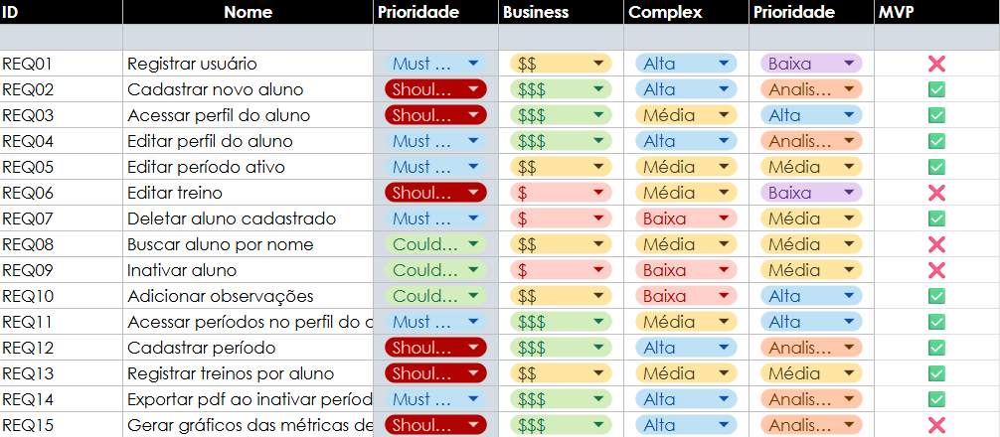

Backlog do Produto
O Backlog do Produto é uma lista viva e priorizada de tudo que é necessário para construir, manter e aprimorar um produto, servindo como uma única fonte de requisitos para qualquer mudança no produto.
Todos os épicos e histórias de usuário apresentados nesta página compõem o Mínimo Produto Viável (MVP) do projeto. Ou seja, representam o conjunto essencial de funcionalidades necessárias para garantir a entrega de valor inicial aos usuários, permitindo validação, testes e evolução futura da aplicação.
Itens do Backlog e Sua Estrutura
Os itens dentro do Backlog são hierárquicos:
-
Épicos (Epics):
-
O que são: Itens grandes e abrangentes que representam um recurso ou funcionalidade significativa. São grandes demais para serem entregues em um único ciclo de desenvolvimento (Sprint).
-
Estrutura Básica: Título (
E01 – Criar Usuário) e Descrição Geral (o propósito e o valor do recurso). -
Histórias de Usuário (User Stories - US):
-
O que são: Pequenas descrições de um recurso do ponto de vista do usuário final. Representam a menor unidade de trabalho que agrega valor.
-
Estrutura Básica Comum: "Como um [tipo de usuário], eu quero [alguma meta], para que [algum benefício]."
Temas
| Código | Tema | Descrição |
|---|---|---|
| T01 | Gerenciamento de Usuários | Tudo relacionado à administração do Profissional, permitindo cadastro de dados importantes como CREF, alunos atuais e outros. |
| T02 | Organização e Acompanhamento de Períodos | Cadastro das métricas de objetivo, tempo disponível e relação direta com a evolução do aluno. |
| T03 | Visualização e Monitoramento de Desempenho | Exibe, compara e monitora o desempenho do aluno com base graficos indicadores de progresso, permitindo exportação |
| T04 | Registro e Histórico de Treinos | Permite registrar treinos, exercícios, séries e cargas, além de consultar o histórico completo para análise de progressão |
Épicos
| Código | Tema Relacionado | Título | Descrição Geral |
|---|---|---|---|
| E01 | T01 | Criar Usuário | Como Treinador, quero cadastrar usuários para que possam acessar a plataforma e utilizar seus recursos. |
| E02 | T03 | Página do Período | Como Treinador, quero criar e visualizar períodos de treino para organizar melhor a evolução dos alunos. |
| E03 | T02 | Gerar Gráficos | Como Treinador, quero gerar gráficos de desempenho para acompanhar a evolução dos alunos ao longo do tempo. |
| E04 | T01 & T04 | Página do Aluno | Como Treinador, quero acessar um painel completo do aluno para gerenciar suas informações e progresso. |
| E05 | T04 | Registro de Treinos | Como Treinador, quero registrar os treinos dos alunos para manter um histórico confiável e evitar perda de dados. |
| E06 | T03 & T04 | PDF do Período | Como Treinador, quero exportar relatórios em PDF para compartilhar o acompanhamento dos treinos com os alunos. |
Histórias de Usuário
A tabela a seguir organiza os Épicos do seu projeto, detalhando o Código, o Título e a Descrição Geral de cada item de alto nível:
| Código | Título | Descrição Geral | REQ | EPIC |
|---|---|---|---|---|
| US01 | Registro de novo usuário | Como um novo usuário, eu quero realizar meu registro no aplicativo para que eu possa ter pdf’s personalizados e atendimento mais pessoal. Descrição: Ao abrir o app pela primeira vez, o usuário deve preencher suas informações (nome, CREF (opcional) e pronomes) para ser atendido como preferir. |
REQ01 | E01 |
| US02 | Cadastro de aluno | Como um usuário, eu quero cadastrar um novo aluno para que eu possa acompanhar seus períodos e treinos. Descrição: Permite adicionar um aluno com dados pessoais e objetos de acompanhamento. |
REQ02 | E01 |
| US03 | Acesso ao perfil do aluno | Como um usuário, eu quero abrir o perfil de um aluno para que eu possa visualizar suas informações e períodos. Descrição: Tela com dados do aluno, períodos ativos e anteriores. |
REQ03, REQ04 | E04 |
| US04 | Acesso a períodos ativos ou anteriores | Como um usuário, eu quero acessar períodos anteriores ou ativos de um aluno para que eu possa revisar ou acompanhar sua evolução. Descrição: Navegação no perfil do aluno entre períodos concluídos e em andamento. |
REQ11 | E04 |
| US05 | Cadastro de período de treino | Como um usuário, eu quero cadastrar um período de treino para um aluno para que ele tenha um plano estruturado e metas definidas. Descrição: Cadastro de período com título, objetivo e plano de treino associado. |
REQ12 | E04 |
| US06 | Registro de treinos em período ativo | Como um usuário, eu quero registrar treinos no período ativo de um aluno para que seu progresso seja acompanhado corretamente. Descrição: Inclusão de treinos ao longo do período vigente. |
REQ13 | E05 |
| US07 | Registro de exercícios em um treino | Como um usuário, eu quero registrar exercícios realizados em um treino para que eu possa detalhar carga, duração e outras informações. Descrição: Cada treino pode ter exercícios vinculados com métricas registradas. |
REQ13, REQ06 | E05 |
| US08 | Edição de perfis e períodos | Como um usuário, eu quero editar perfis de alunos e períodos ativos para que eu possa manter informações sempre atualizadas. Descrição: Alteração de dados de aluno e período, como nome, dados, datas de treino, etc... |
REQ05, REQ04 | E02 |
| US09 | Fechamento de período de treino | Como um usuário, eu quero fechar um período de treino de um aluno para que ele seja arquivado e um novo possa ser iniciado. Descrição: Função para encerrar oficialmente um período ativo. |
REQ05 | E02, 06 |
| US10 | Geração de relatório | Como um usuário, eu quero que o sistema gere um relatório do período para visualizar progresso dos alunos dinamicamente. Descrição: Geração automática de resumo do período. |
REQ14 | E06 E03 |
| US11 | PDF completo de relatório | Como um usuário, quero que o PDF contenha título, plano de treino, datas, gráficos e variáveis para que o relatório seja completo. Descrição: O PDF deve ser gerado com layout organizado e dados de evolução. |
REQ15 | E03, 06 |
| US12 | Busca de alunos por nome | Como um usuário, eu quero buscar alunos por nome para que eu encontre rapidamente o aluno desejado. Descrição: Barra de busca dentro da lista de alunos cadastrados. |
REQ08 | E01 |
| US13 | Ocultar alunos inativos | Como um usuário, eu quero ocultar alunos da minha lista para que eu possa organizar apenas os ativos. Descrição: Função de marcar aluno como inativo, mantendo seus dados salvos. |
REQ09 | E04 |
| US14 | Exclusão de aluno | Como um usuário, quero deletar um aluno cadastrado para que ele não apareça mais no sistema. Descrição: Opção de exclusão definitiva de aluno. |
REQ07 | E04 |
| US15 | Adição de observações | Como um personal, quero adicionar observações em diferentes locais do aplicativo para que eu registre informações adicionais relevantes. Descrição: Campo de anotações livres em pontos estratégicos (aluno, período, treino, etc.). |
REQ10 | E02, 06 |
Priorização do Backlog e Definição do MVP
Para organizar e priorizar o backlog do sistema TreinaAí, foram aplicadas duas técnicas complementares:
- MoSCoW, para classificação geral de criticidade;
- Avaliação categórica de Valor e Complexidade, com níveis definidos em Baixo / Médio / Alto.
Essas técnicas permitem entender tanto a importância estratégica de cada requisito quanto seu custo aproximado de implementação.
Técnica MoSCoW
A técnica MoSCoW classifica os requisitos em quatro níveis de prioridade:
-
Must Have (M) – Deve Ter: Funcionalidades indispensáveis para o funcionamento básico do sistema. Sem elas, o produto não é considerado viável.
-
Should Have (S) – Deveria Ter: Funcionalidades importantes, que agregam valor relevante, mas que podem ser adiadas sem comprometer a entrega inicial.
-
Could Have (C) – Poderia Ter: Funcionalidades desejáveis, que melhoram a experiência do usuário, mas não são essenciais para o funcionamento mínimo.
-
Won’t Have (W) – Não Terá por agora: Funcionalidades que não serão implementadas nesta versão, podendo ser consideradas em futuras atualizações.
Avaliação de Valor de Negócio e Complexidade (Baixo / Médio / Alto)
Além do MoSCoW, cada requisito também recebeu uma avaliação segundo dois critérios:
Valor de Negócio
Mede o impacto e o retorno financeiro ou estratégico para o projeto. A escala foi $ (Baixo Valor), $$ (Médio Valor) e $$$ (Alto Valor). Esse critério informou o eixo de Valor (V) da matriz de priorização.
| Nível | Definição |
|---|---|
| Baixo | Impacto limitado; funcionalidade complementar. |
| Médio | Melhora relevante para usuários; facilita operações. |
| Alto | Impacto direto no objetivo do produto; elemento central do funcionamento. |
Complexidade / Esforço Técnico
Mede a complexidade de implementação. A escala utilizada foi B (Baixo Esforço), M (Médio Esforço) e A (Alto Esforço). Este critério informou o eixo de Complexidade (C) da matriz de priorização.
| Nível | Definição |
|---|---|
| Baixa | Implementação simples; poucas dependências; baixo tempo. |
| Média | Exige integração moderada, validações ou interface dedicada. |
| Alta | Necessita múltiplas integrações, cálculos complexos ou tratamento avançado de dados. |
Matriz de Priorização (Valor × Complexidade)
A matriz a seguir cruza os níveis de Valor e Complexidade para definir a prioridade de implementação dos requisitos:
| V \ C | Baixa | Média | Alta |
|---|---|---|---|
| Alto | Prioridade Máxima | Alta | Avaliar retorno |
| Médio | Alta | Média | Baixa |
| Baixo | Média | Baixa | Mínima |
Essa matriz permite identificar:
- Entregar primeiro: Alto valor + baixa complexidade
- Planejar com cuidado: Alto valor + alta complexidade
- Deixar para depois: Baixo valor + alta complexidade
Grafico de Prioridade

Definição do MVP
O MVP é composto por funcionalidades que apresentam:
- Alto valor (segundo MoSCoW e a matriz de valor);
- Baixa ou média complexidade;
- Relevância direta para os objetivos principais do produto.
Funcionalidades incluídas:
Correlacionamos o id de cada requisito funcional com a história de usuário e o objetivo específico que ele atende, conforme a tabela abaixo:
Tabela 04: funcionalidades do MVP
| ID | US Relacionada | Objetivo Específico |
|---|---|---|
| REQ02 | US02 | OE2 |
| REQ03 | US03 | OE2 |
| REQ04 | US03, US08 | OE2 |
| REQ05 | US09 | OE2 |
| REQ07 | US14 | OE1 |
| REQ10 | US15 | OE3 |
| REQ11 | US04 | OE3 |
| REQ012 | US05 | OE1 |
| REQ13 | US07, US06 | OE2 |
| REQ14 | US10 | OE4 & OE5 |
Essas funcionalidades serão entregues na primeira versão do sistema, garantindo entrega rápida de valor com menor complexidade e maior impacto para o usuário final.
O mvp proposto, portanto, resolve a grande maioria dos problemas apresentados pelo cliente, principalmente a falta de tempo para adição de métricas, dificuldade de visualização da evolução e a grande gama de alunos administrados em diferentes tabelas. Assim, o MVP foca em entregar as funcionalidades essenciais que atendem diretamente aos objetivos do projeto, garantindo uma base sólida para futuras melhorias e expansões.
Histórico de Versão
| Data | Versão | Descrição | Autor |
|---|---|---|---|
| 28/09/2025 | 1.0 | Criação do Documento | Gabriel Fae |
| 06/10/2025 | 1.1 | Adição da priorização | Gabriel Fae |
| 07/10/2025 | 1.2 | Adição dos objetivos MVP | Gabriel Fae |
| 16/11/2025 | 1.3 | Ajustes na priorização | Davi Negreiros |
| 17/11/2025 | 1.4 | Ajustes e inserção de tabelas | Gabriel Fae |
| 24/11/2025 | 1.5 | FInalização da issue #18 | Raissa |
| 29/11/2025 | 1.6 | Ajuste de rastreabilidade | Gabriel Fae |